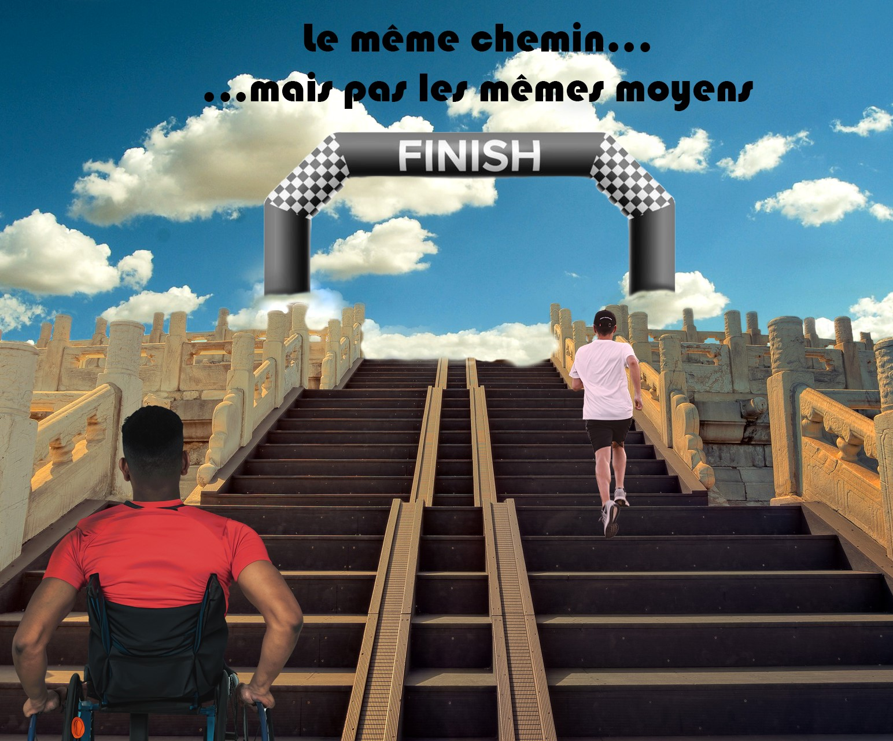
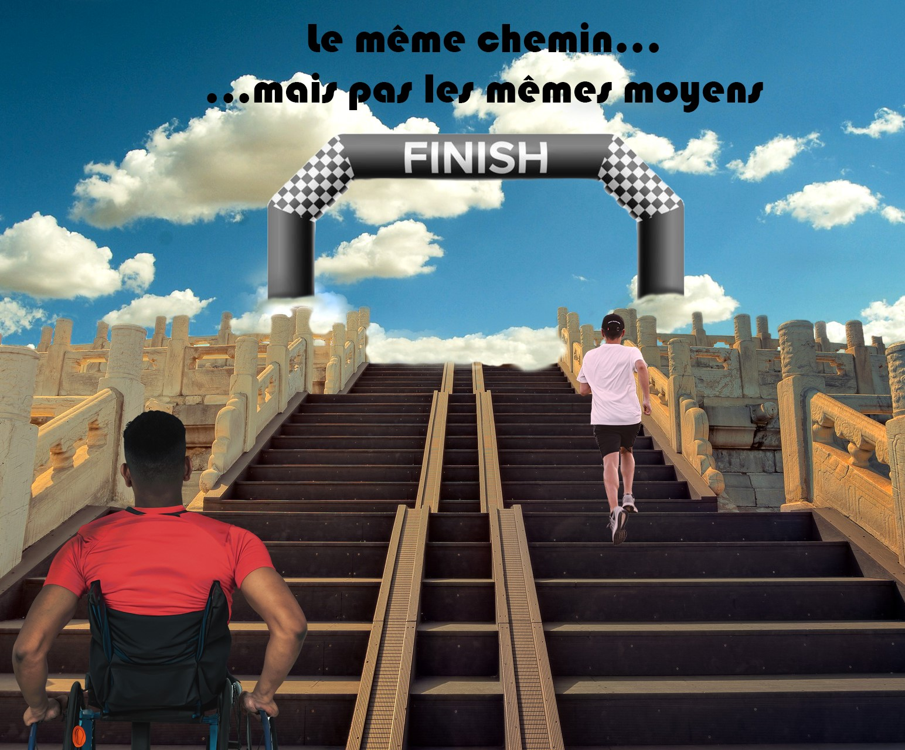

Projet photoshop GRA
Dans le cadre de plusieurs projets en MMI sur photoshop, nous avons créé des «chimères», nous avons dû fusionner un animal avec un objet ou un autre animal. On a aussi dû créer des affiches et retoucher des photos permettant ainsi d’appliquer les compétences que nous avions acquises sur photoshop durant ces cours.
 
